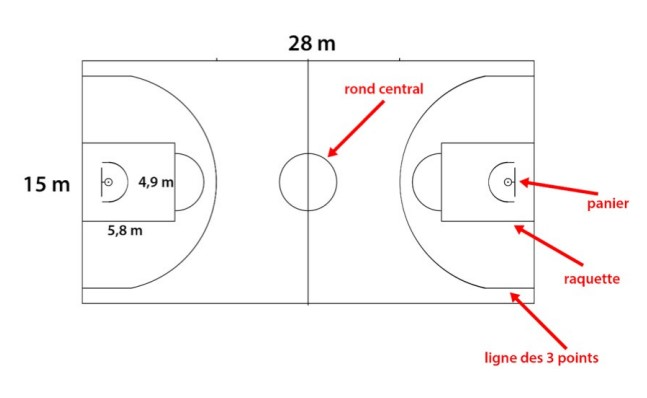

Lorsqu'on s'interesse au basket, le terrain est une source de confusion qu'il faudra vite apprehender afin de mieux comprendre les regles on y retrouve deux grandes parties:
1) La premiere partie du terrain, ou l on retrouve un arc de cercle signifiant la zone au dessus de laquelle il faut "shooter" pour que le tirs compte pour 3points. Puis la raquette qui va être la zone de jeu primaire du pivot (voir plus). Dans cette raquette, on pourra retrouver les lancers-francs(voir plus) ou encore les tirs mi-distance(voir plus).
2) La deuxième partie du terrain, elle, sera la même mais pour la deuxieme équipe, c'est a dire que l'équipe qui attaque d'un coté défendra l'autre équipe sur l'autre moitié du terrain.